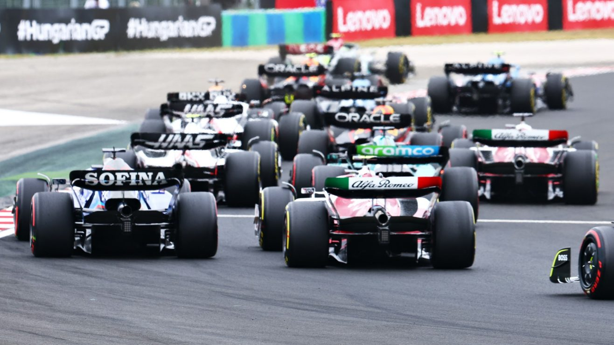

Les actualités de la semaine
Rédigé par Clément Lazzarini, le 22/08/2022
Alpine acteur principal des vacances
Bien que tout le petit monde de la Formule 1 était en vacances depuis le Grand Prix de Hongrie, on a eu de quoi combler le manque de F1 grâce aux transferts de cette "Silly Season" ! Tout a commencé avec l'annonce du départ en retraite de Sebastian Vettel. Le quadruple champion du monde raccroche avec la Formule 1 à la fin de la saison pour se dévouer à son rôle de père et découvrir de nouveaux horizons. Le lendemain, à peine le temps de digérer la nouvelle qu'Aston Martin annonce... Fernando Alonso ! L'(ex) pilote Alpine a signé un contrat de longue durée avec l'écurie et sera donc le futur coéquipier de Lance Stroll. Tout le monde semblait très étonné de ce choix à première vue, car la relation avec Alpine semblait être en bons termes. Puis Alpine rebondit à cette annonce en annonçant la promotion de leur troisième pilote, la pépite Oscar Piastri. Mais dernier coup de tonnerre, et non des moindres, le jeune pilote de réserve d'Alpine annonce qu'il est étonné de cette annonce et qu'il ne conduirait pas pour Alpine l'an prochain.
Pour résumer, Sebastian Vettel part en retraite, Fernando Alonso quitte Alpine pour le remplacer et Oscar Piastri a refusé de remplacer Fernando Alonso chez Alpine.
La guerre des sièges en F1
Mais pourquoi un jeune pilote qui n'a jamais conduit en Formule 1 se permet de refuser une telle opportunité ? Certainement car il a déjà trouvé ailleurs. D'après de nombreuses rumeurs le pilote australien devrait remplacer un autre pilote australien, Daniel Ricciardo. Maintenant, la question est de savoir si ce sera pour 2024, ou dès 2023..?
Chez les autres écuries tout le monde est resté à peu près calme, du moins en surface. Pour résumer la situation actuelle, seul Red Bull, Ferrari, Mercedes, Aston Martin et McLaren ont leurs deux pilotes pour l'an prochain. Les autres ont toutes un pilote et une place à prendre...potentiellement.
Qui sera le futur coéquipier de Valtteri Bottas chez Alfa Roméo ?
Qui sera le futur coéquipier de Pierre Gasly chez Alpha Tauri ?
Qui sera le futur coéquipier d'Esteban Ocon chez Alpine ?
Qui sera le futur coéquipier de Kevin Magnussen chez Haas ?
Qui sera le futur coéquipier d'Alex Albon chez Williams ?
Qui seront les cinq coéquipiers de ces pilotes l'an prochain ? Pour ma part, voici mes pronostiques : Logan Sargeant (F2), Mick Schumacher, Théo Pourchaire (F2), Guanyu Zhou et Daniel Ricciardo. Oui je sais, surprenant, mais je n'ai pas dit dans quelles écuries iraient ses pilotes..! Ce ne sont que mes propres suppositions et je vous invite à me partager les vôtres sur les réseaux sociaux !
D'ailleurs si ce n'est pas encore fait, venez me suivre sur Instagram et sur Twitter : @FastF1fr
IT'S RACE WEEK !
Pour finir, voici LA meilleure nouvelle cette semaine. IT'S RACE WEEK ! La Formule 1 est de retour ce week-end après cette interminable pause estivale. C'est donc parti pour la deuxième partie de saison. Rendez-vous dimanche à 15h pour le Grand Prix de Belgique sur le circuit de Spa-Francorchamps pour le 14ème Grand Prix de cette saison !